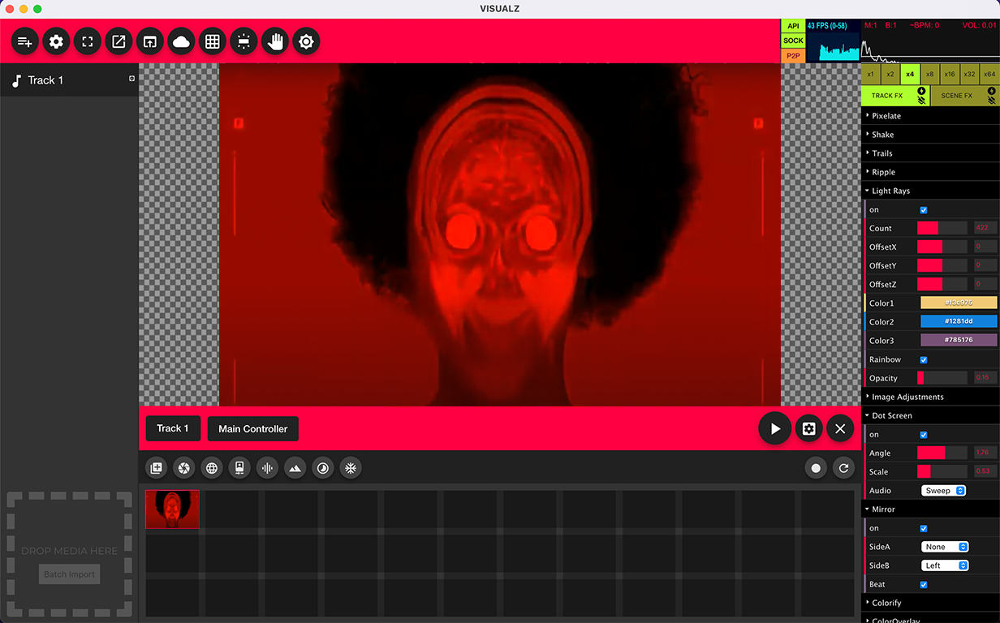

<div class="how-to-app">
    

    <button mat-mini-fab color="primary" class="one-new"
        matTooltip="Add track's to your set. Your set can have multiple tracks.">
        1
    </button>
    
    <button mat-mini-fab color="primary" class="two-new"
        matTooltip="Set preferences.">
        2
    </button>

    <button mat-mini-fab color="primary" class="three-new"
        matTooltip="Fullscreen mode.">
        3
    </button>

    <button mat-mini-fab color="primary" class="four-new"
        matTooltip="Open external window for multiple displays and OBS integration/streaming.">
        4
    </button>

    <button mat-mini-fab color="primary" class="five-new"
        matTooltip="Open remote browser window for remote/wireless location OBS integration/streaming.">
        5
    </button>

    <button mat-mini-fab color="primary" class="six-new"
        matTooltip="Move all set content to the cloud.">
        6
    </button>

    <button mat-mini-fab color="primary" class="seven-new"
        matTooltip="Midi controller setup.">
        7
    </button>

    <button mat-mini-fab color="primary" class="eight-new"
        matTooltip="Blackout.">
        8
    </button>

    <button mat-mini-fab color="primary" class="nine-new"
        matTooltip="Manual orbit control.">
        9
    </button>

    <button mat-mini-fab color="primary" class="ten-new"
        matTooltip="Dark mode.">
        10
    </button>

    <!-----  ----->

    <button mat-mini-fab color="primary" class="eleven-new"
        matTooltip="VISUALZ API connection status.">
        11
    </button>

    <button mat-mini-fab color="primary" class="twelve-new"
        matTooltip="VISUALZ websocket connection status.">
        12
    </button>

    <button mat-mini-fab color="primary" class="thirteen-new"
        matTooltip="VISUALZ peer to peer connection status.">
        13
    </button>

    <button mat-mini-fab color="primary" class="fourteen-new"
        matTooltip="Frames per second and milliseconds needed to render a frame statistics.">
        14
    </button>

    <button mat-mini-fab color="primary" class="fifteen-new"
        matTooltip="Current measure count (est).">
        15
    </button>

    <button mat-mini-fab color="primary" class="sixteen-new"
        matTooltip="Current beat count (est).">
        16
    </button>

    <button mat-mini-fab color="primary" class="seventeen-new"
        matTooltip="Current BPM (est).">
        17
    </button>

    <button mat-mini-fab color="primary" class="eighteen-new"
        matTooltip="Current volume level.">
        18
    </button>
    
    <button mat-mini-fab color="primary" class="nineteen-new"
        matTooltip="The audio analyzer will display when a scene change event is detcted, the amplitude level, and a realtime BPM estimate.">
        19
    </button>


    <!-----  ----->

    <button mat-mini-fab color="primary" class="twenty-new"
        matTooltip="Track preferences.">
        20
    </button>

    <button mat-mini-fab color="primary" class="twentyone-new"
        matTooltip="Track list.">
        21
    </button>

    <button mat-mini-fab color="primary" class="twentytwo-new"
        matTooltip="Batch import media.">
        22
    </button>

    <button mat-mini-fab color="primary" class="twentythree-new"
        matTooltip="Track selection.">
        23
    </button>

    <button mat-mini-fab color="primary" class="twentyfour-new"
        matTooltip="Main/Mobile controller selection.">
        24
    </button>

    <button mat-mini-fab color="primary" class="twentyfive-new"
        matTooltip="Add media scene.">
        25
    </button>

    <button mat-mini-fab color="primary" class="twentysix-new"
        matTooltip="Add camera scene.">
        26
    </button>

    <button mat-mini-fab color="primary" class="twentyseven-new"
        matTooltip="Add blank world scene.">
        27
    </button>

    <button mat-mini-fab color="primary" class="twentyeight-new"
        matTooltip="Add scan/fan cam scene.">
        28
    </button>

    <button mat-mini-fab color="primary" class="twentynine-new"
        matTooltip="Add alphaviz visualzizer scene.">
        29
    </button>

    <button mat-mini-fab color="primary" class="thirty-new"
        matTooltip="Add vaporwave visualizer scene.">
        30
    </button>

    <button mat-mini-fab color="primary" class="thirtyone-new"
        matTooltip="Add blob visualizer scene.">
        31
    </button>

    <button mat-mini-fab color="primary" class="thirtytwo-new"
        matTooltip="Add fractal visualizer scene.">
        32
    </button>

    <!-- -->

    <button mat-mini-fab color="primary" class="thirtythree-new"
        matTooltip="A scene.">
        33
    </button>

    <button mat-mini-fab color="primary" class="thirtyfour-new"
        matTooltip="Scene preferences.">
        34
    </button>

    <button mat-mini-fab color="primary" class="thirtyfive-new"
        matTooltip="Play/Toggle audio reactive scene transitioning.">
        35
    </button>

    <button mat-mini-fab color="primary" class="thirtysix-new"
        matTooltip="Track preferences.">
        36
    </button>

    <button mat-mini-fab color="primary" class="thirtyseven-new"
        matTooltip="Clear all scenes from track.">
        37
    </button>

    <button mat-mini-fab color="primary" class="thirtyeight-new"
        matTooltip="Record video loop or make music video.">
        38
    </button>

    <button mat-mini-fab color="primary" class="thirtynine-new"
        matTooltip="Refresh.">
        39
    </button>

    <!-- -->

    <button mat-mini-fab color="primary" class="forty-new"
        matTooltip="Beat transition x number of beats control.">
        40
    </button>

    <button mat-mini-fab color="primary" class="fortyone-new"
        matTooltip="Track/Universal FX.">
        41
    </button>

    <button mat-mini-fab color="primary" class="fortytwo-new"
        matTooltip="Scene FX.">
        42
    </button>

    <button mat-mini-fab color="primary" class="fortythree-new"
        matTooltip="FX panel.">
        43
    </button>

    
    <!-- <button mat-mini-fab color="primary" class="one"
        matTooltip="Toggle between your set's tracks. Your set can have multiple tracks.">
        1
    </button>
    <button mat-mini-fab color="primary" class="two" matTooltip="Add scenes to your track. Scenes can consist of any media, 
        cameras, or visualizations.">
        2
    </button>
    <button mat-mini-fab color="primary" class="three" matTooltip="Switch between the main and mobile controllers.">
        3
    </button>
    <button mat-mini-fab color="primary" class="four" matTooltip="Add gif, image, or video media to your scene.">
        4
    </button>
    <button mat-mini-fab color="primary" class="five" matTooltip="Add a camera device or mobile video.">
        5
    </button>
    <button mat-mini-fab color="primary" class="six"
        matTooltip="Add a FanCam scene. Audience mobile interactive content.">
        6
    </button>
    <button mat-mini-fab color="primary" class="seven" matTooltip="AlphaViz is an ubervizesque audio visualizer.">
        7
    </button>
    <button mat-mini-fab color="primary" class="eight" matTooltip="Vapor is a vaporwavy audio visualizer.">
        8
    </button>
    <button mat-mini-fab color="primary" class="nine"
        matTooltip="Add a new track to your set. Sets have tracks. Tracks have controllers. Controllers have scenes.">
        9
    </button>
    <button mat-mini-fab color="primary" class="ten" matTooltip="Edit your set's settings.">
        10
    </button>
    <button mat-mini-fab color="primary" class="eleven" matTooltip="Fullscreen mode.">
        11
    </button>
    <button mat-mini-fab color="primary" class="twelve" matTooltip="Open external window or browser stream window.">
        12
    </button>
    <button mat-mini-fab color="primary" class="thirteen" matTooltip="Move all content to the cloud.">
        13
    </button>
    <button mat-mini-fab color="primary" class="fourteen"
        matTooltip="Frames per second and milliseconds needed to render a frame statistics.">
        14
    </button>
    <button mat-mini-fab color="primary" class="fifteen"
        matTooltip="The audio analyzer will display when a scene change event is detcted, the amplitude level, and a realtime BPM estimate.">
        15
    </button>
    <button mat-mini-fab color="primary" class="sixteen" matTooltip="The main preview window.">
        16
    </button>
    <button mat-mini-fab color="primary" class="seventeen"
        matTooltip="Effects control panel. Different content may have different options.">
        17
    </button>
    <button mat-mini-fab color="primary" class="eighteen" matTooltip="Toggle Track and/or Controller.">
        18
    </button>
    <button mat-mini-fab color="primary" class="nineteen" matTooltip="Toggle Track and/or Controller.">
        19
    </button>
    <button mat-mini-fab color="primary" class="twenty"
        matTooltip="Play to start the automatic scene changing based on audio analysis.">
        20
    </button>
    <button mat-mini-fab color="primary" class="twentyone" matTooltip="Refresh the current scene.">
        21
    </button>
    <button mat-mini-fab color="primary" class="twentytwo" matTooltip="Clear all scene effects.">
        22
    </button>
    <button mat-mini-fab color="primary" class="twentythree" matTooltip="Randomize scene effects.">
        23
    </button>
    <button mat-mini-fab color="primary" class="twentyfour" matTooltip="Track settings.">
        24
    </button>
    <button mat-mini-fab color="primary" class="twentyfive" matTooltip="Clear track.">
        25
    </button>
    <button mat-mini-fab color="primary" class="twentysix" matTooltip="A scene.">
        26
    </button>
    <button mat-mini-fab color="primary" class="twentyseven" matTooltip="Scene settings/remove scene.">
        27
    </button>
    <button mat-mini-fab color="primary" class="twentyeight" matTooltip="Scene grid.">
        28
    </button> -->
</div>